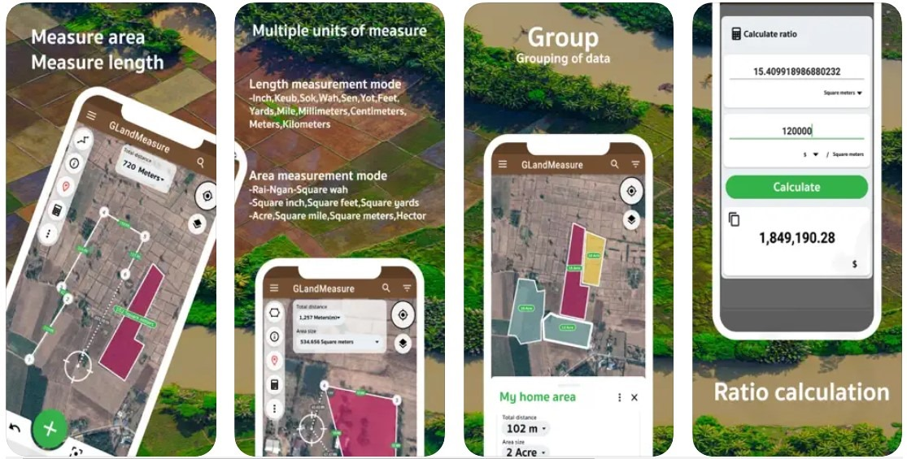
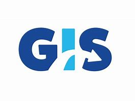
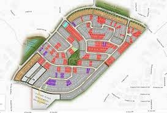
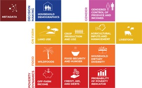
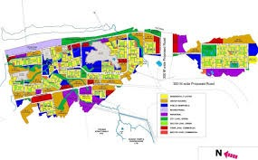
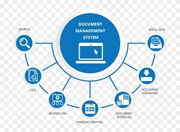
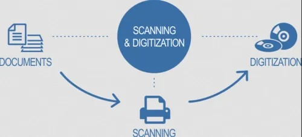
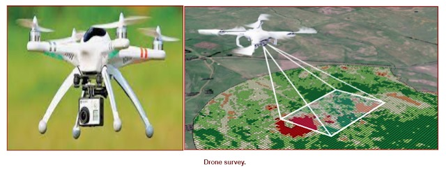

-

Online Property Tax Assessment
Online property tax assessment lets you easily check and pay your property tax through your city's official portal.
For example, Nagpur residents can search their property, view dues, and pay online. -

Offline Property Tax Assessment
Offline property tax assessment is done by visiting your local municipal office, where property owners can submit documents like
ownership proof, building plans, and previous tax receipts to get their property evaluated. -

GIS Solution
GIS solution use spatial data for mapping, analysis, and decision-making. They help in urban planning, tax assessment, and infrastructure management.
-
Land Survey
A land base survey maps and measures land features, boundaries, and properties for planning, development, and legal purposes.
-

Parcel Mapping
Parcel mapping is the process of creating and maintaining maps that define property boundaries, ownership, and land divisions for tax and planning purposes.
-

Consumer Survey
A consumer survey gathers customer feedback to analyze preferences, behavior, and satisfaction for better decision-making.
-

House Hold Survey
A household survey collects data on demographics, income, living conditions, and social aspects to support policy and planning.
-
Socio Economical Survey
Socioeconomics examines the link between economy and society, including social norms, values, and interactions.
-

City Development Survey
A development plan outlines a local authority's land use policies, guiding planning decisions and ensuring consistent, informed development control.
-

DGPS Survey
DGPS (Differential GPS) survey is a high-accuracy positioning method that uses correction signals from a fixed base station to improve GPS data. It is widely used in engineering, mapping, and infrastructure projects for precise location measurements.
-
Software Solutions
A software solutions is a tailored system or application that addresses specific business or user needs efficiently.
-

Documents management system solutions
A document management system (DMS) is usually a computerized system used to store, share, track and manage files or documents. Some systems include history tracking where a log of the various versions created and modified by different users is recorded.
-

Document scanning & Digitization solutions
Document scanning & digitization solutions convert physical documents into digital formats for easy storage, access, and management.
-

Aerial mapping through drone
Aerial survey is a method of collecting geomatics or other imagery by using airplanes, helicopters, UAVs, balloons or other aerial methods.
-

Election Commission -Votor Identification & live Updation
Election Commission’s Voter Identification & Live Updation system ensures accurate voter data by verifying identities and updating records in real time, enhancing transparency and reducing duplication.
-

Government e-School - LC Digitalization & Centralization (Private, ZP & ULBS)
e-School LC Digitalization & Centralization is a government initiative to create secure, centralized digital records of student Leaving Certificates across Private, ZP, and ULB schools, enabling faster verification, reduced fraud, and better data management.